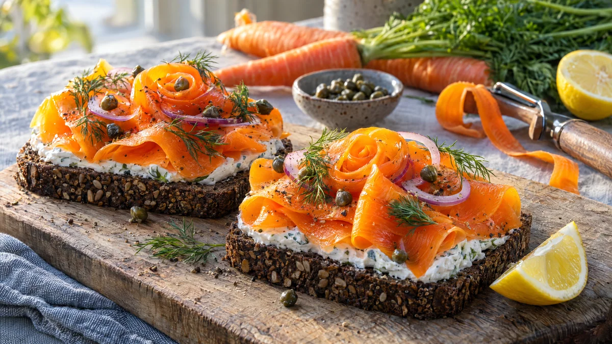

RESTFEST · RECEPTSmörgås
Morotslax på rågbröd med dill och kapris
Några helt vanliga morötter hyvlas tunt och marineras i en rökig, salt citronmarinad tills de liknar gravad lax i både färg och konsistens. De läggs i mjuka veck på rågbröd med vegansk färskost, rödlök, kapris och dill. Ser ut som en klassisk laxsmörgås men är bara morötter.
- Förberedelse
- 20 min + minst 1 tim marinering
- Tillagning
- 5 min
- Portioner
- 4 smörgåsar
- Nivå
- Nybörjare
 Det här behöver du
Det här behöver du
JÄMFÖRT MED DIN KYL
Tryck på + vid det du behöver köpa.
Morotslax
Smörgåsar
Gör så här
- Skala morötterna. Hyvla långa, breda band med en potatisskalare och vrid moroten efter hand. Den smala kärnan som blir kvar kan du äta som snacks.
- Koka upp en kastrull med saltat vatten. Blanchera morotsbanden i 1–2 minuter, tills de är böjliga men inte mjuka.
- Häll av och skölj banden i kallt vatten. Klappa dem torra med hushållspapper.
- Rör ihop olja, citronsaft, soja, rökt paprika, salt, socker och peppar. Vänd morotsbanden i marinaden.
- Täck och låt marinera i kylen i minst 1 timme, gärna över natten. Ju längre, desto mer lik gravad lax blir smaken.
- Skala rödlöken och skiva den i tunna ringar. Skär citronen i tunna klyftor.
- Bred ett tjockt lager färskost på varje brödskiva, ända ut i kanterna.
- Lyft upp morotsbanden ur marinaden och lägg dem i mjuka veck över färskosten, som skivad lax.
- Toppa med rödlöksringar, kapris och dillkvistar.
Dekoration och servering
- Vik några morotsband till en liten ros mitt på smörgåsen för ett extra elegant intryck.
- Avsluta med nymald svartpeppar och en citronklyfta på sidan.
- Servera på ett träbräde eller en ljus tallrik, med en kniv och gaffel som på en dansk lunchrestaurang.
- Morotslaxen håller i 3–4 dagar i kylen och går lika bra i en sallad eller på en bagel.
Mått och ugnstemperaturer
Måtten är svenska (dl, msk, tsk, krm). Ugnstemperaturerna gäller vanlig ugn med över- och undervärme; med varmluft, sänk med 20 grader.